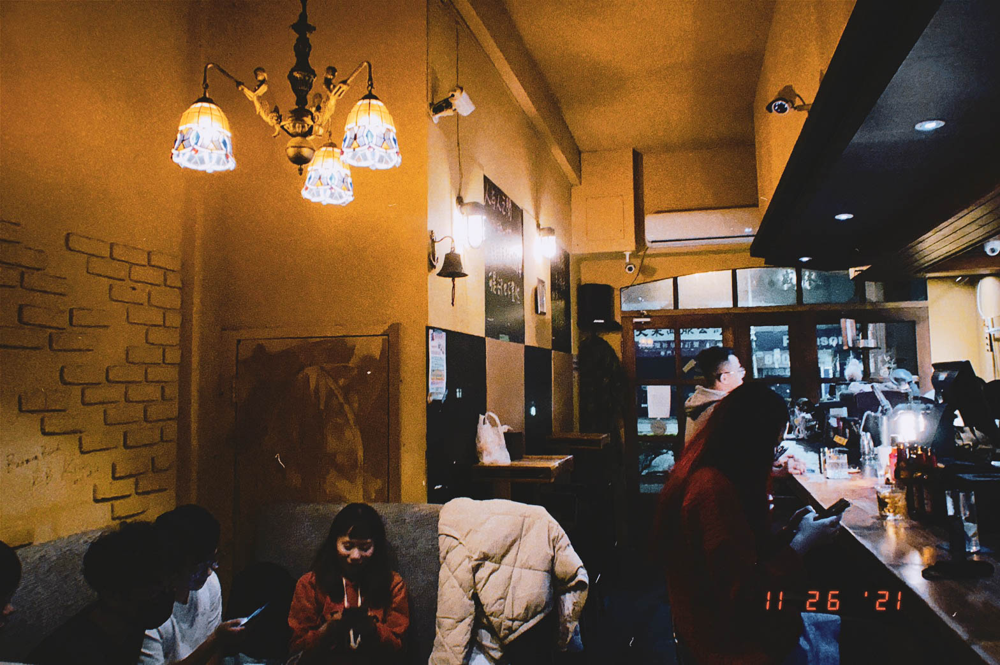
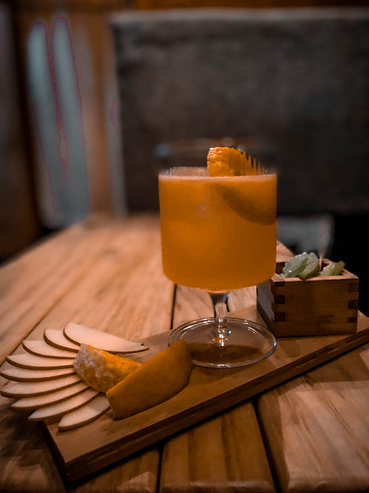
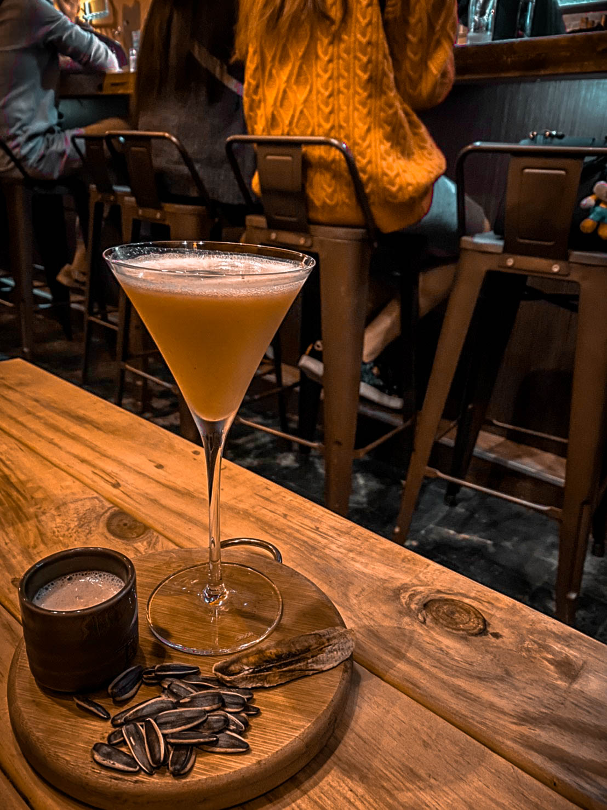
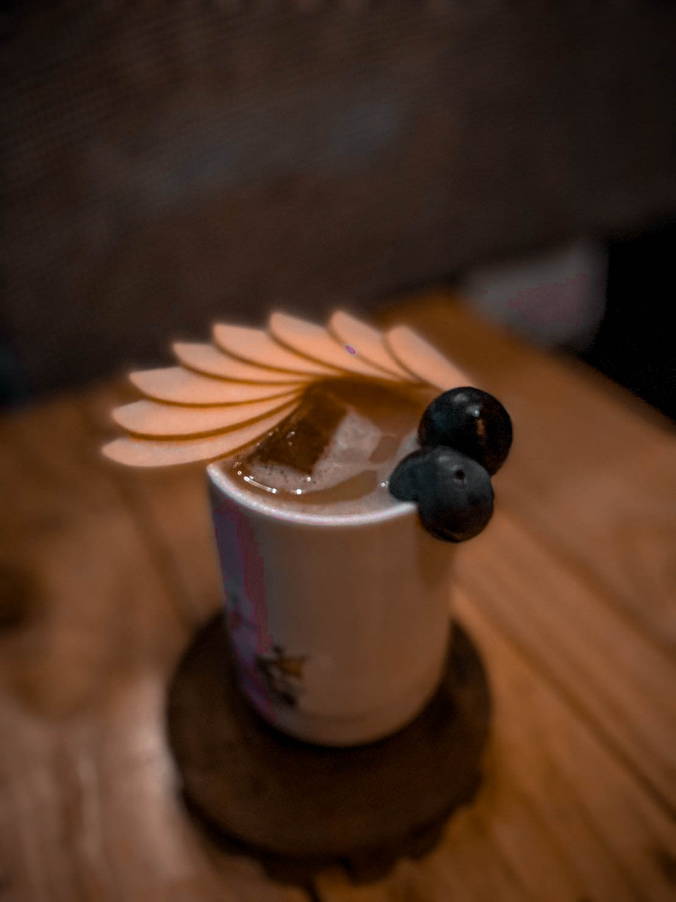
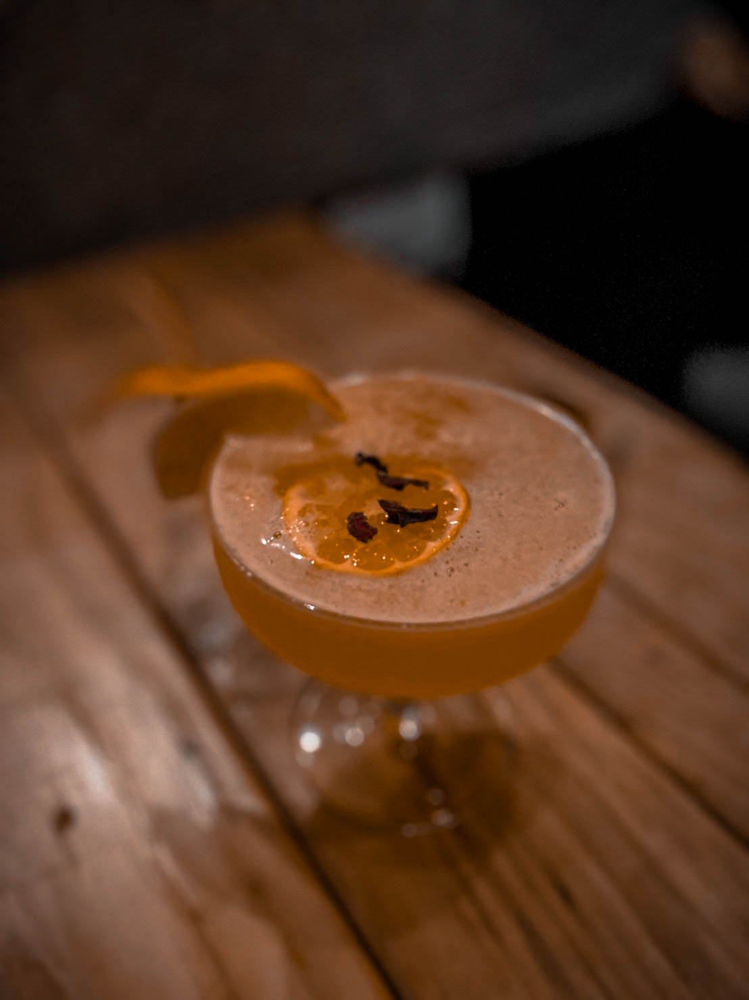
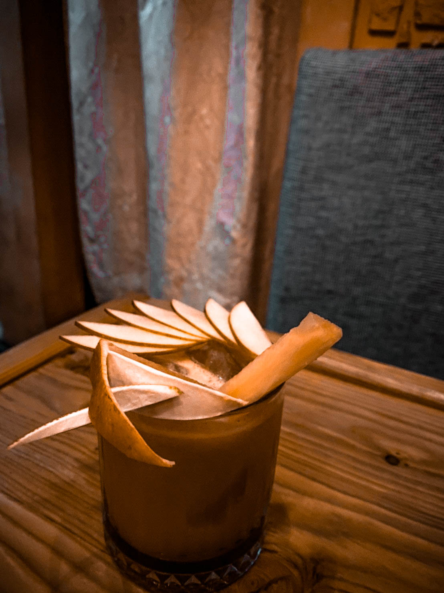

小小的空間，酒盡溫馨； 在談笑風生間，酸甜苦辣，一乾而盡...
25th November 2021

關於「小聲點」:
夜晚的降臨，為小聲點拉開序幕，下班的同事、課後的學生及久未見的朋友都在這更新著彼此的近況。
喝著老闆為每個人客製化的特調，積累多時的疲憊身心也在此得到舒緩，在這富有懷舊英式風的小溫馨裡，
沒有明顯的招牌也沒有厚重的煙味，有的只有老闆為每個客人所用心經營的熱忱。
坐在吧檯的你還可以近距離觀賞製作過程，也可以與老闆交流談心，說不定會激發出對酒不同的新體悟~
(tips: 22:00前可預約位置，也可以帶外食入內，送酒速度適中，水果種類也可做選擇)
喝著老闆為每個人客製化的特調，積累多時的疲憊身心也在此得到舒緩，在這富有懷舊英式風的小溫馨裡，
沒有明顯的招牌也沒有厚重的煙味，有的只有老闆為每個客人所用心經營的熱忱。
坐在吧檯的你還可以近距離觀賞製作過程，也可以與老闆交流談心，說不定會激發出對酒不同的新體悟~
(tips: 22:00前可預約位置，也可以帶外食入內，送酒速度適中，水果種類也可做選擇)

多果香、酒精濃度適中、酸感重
看得出老闆的用心程度，以切片的蘋果、橙片當裝飾，
而且最重要的是，因為這杯調酒以酸感為主，
所以老闆很細心地在旁佐以芒果青，讓你能一口酒一片芒果青交互搭配，
在橙香之餘又能有芒果青的酸，酒感明顯卻又不失清爽，微醺首選!
而且最重要的是，因為這杯調酒以酸感為主，
所以老闆很細心地在旁佐以芒果青，讓你能一口酒一片芒果青交互搭配，
在橙香之餘又能有芒果青的酸，酒感明顯卻又不失清爽，微醺首選!

水果不指定、茶香、偏甜酸少、酒精濃度適中
當送來的一刻，頗讓人為之驚艷，
第一次看到有人拿瓜子來搭配調酒，讓我真心為老闆的創意感到佩服。
原來酒類搭配茶香，居然會出現乳酸的味道，不突兀也意外和諧，
如同截然不同的兩個人，在相處交流的過程中，不經意的"蹦"出新元素，
甜口的乳酸感也將酒感減輕不少，
喜歡奶酒嗎?那你一定也會喜歡這杯!
第一次看到有人拿瓜子來搭配調酒，讓我真心為老闆的創意感到佩服。
原來酒類搭配茶香，居然會出現乳酸的味道，不突兀也意外和諧，
如同截然不同的兩個人，在相處交流的過程中，不經意的"蹦"出新元素，
甜口的乳酸感也將酒感減輕不少，
喜歡奶酒嗎?那你一定也會喜歡這杯!

水果不指定、偏甜酸少、酒精濃度適中
這杯調酒雖然沒有過度華麗的擺盤，
但卻在日式茶杯上以蘋果片做半花散狀與兩顆葡萄當點綴，
在簡樸中又顯露出一點精緻感，而甜味也將酒感壓到最小，
在味道部分，則是帶點芭樂香與淡淡葡萄清香，
明顯的告訴客人水果不只是裝飾，它是真真實實的融入酒中，
清甜好入口，如同剛戀愛的學生情侶檔，那種青澀單純的美好
但卻在日式茶杯上以蘋果片做半花散狀與兩顆葡萄當點綴，
在簡樸中又顯露出一點精緻感，而甜味也將酒感壓到最小，
在味道部分，則是帶點芭樂香與淡淡葡萄清香，
明顯的告訴客人水果不只是裝飾，它是真真實實的融入酒中，
清甜好入口，如同剛戀愛的學生情侶檔，那種青澀單純的美好

酸甜適中、酒精濃度適中、柑橘柳橙風味
以寬口香檳杯裝載滿杯橙香的富足，如同熱戀中的幸福感，
甜滋滋的風味環繞於口腔中，以橙片與乾燥果乾作點綴，
黃澄澄中帶點紅，專門為不愛重酒感的你做選擇，
如同再別康橋裡的徐志摩:「輕輕的我走了，正如我輕輕的來」
不知不覺，杯底盡空、意猶未盡...
甜滋滋的風味環繞於口腔中，以橙片與乾燥果乾作點綴，
黃澄澄中帶點紅，專門為不愛重酒感的你做選擇，
如同再別康橋裡的徐志摩:「輕輕的我走了，正如我輕輕的來」
不知不覺，杯底盡空、意猶未盡...

水果不指定、偏甜酸少 (無酒精
老闆會依當天的水果品項為你現打特製
淺嚐一口，瞬間被濃郁果香給環繞。
它所裝飾的水果們也都非常新鮮，
連大部分人都敬而遠之的鳳梨梗居然也都有淡淡的甜味，
這也是老闆厲害的地方吧!連果汁都能處理的恰到好處 老闆厲害死了
NT250
)
別怕來酒吧就一定要喝酒!需要當保母的你也是有果汁可選擇的，
老闆會依當天的水果品項為你現打特製
淺嚐一口，瞬間被濃郁果香給環繞。
它所裝飾的水果們也都非常新鮮，
連大部分人都敬而遠之的鳳梨梗居然也都有淡淡的甜味，
這也是老闆厲害的地方吧!連果汁都能處理的恰到好處 老闆厲害死了
地點 : 高雄市鹽埕區五福四路
營業時間 : 日 ~ 四 :
價格 :
11
號 營業時間 : 日 ~ 四 :
19:00-02:00
| 五、六 :
19:00-03:00
價格 :
350
左右